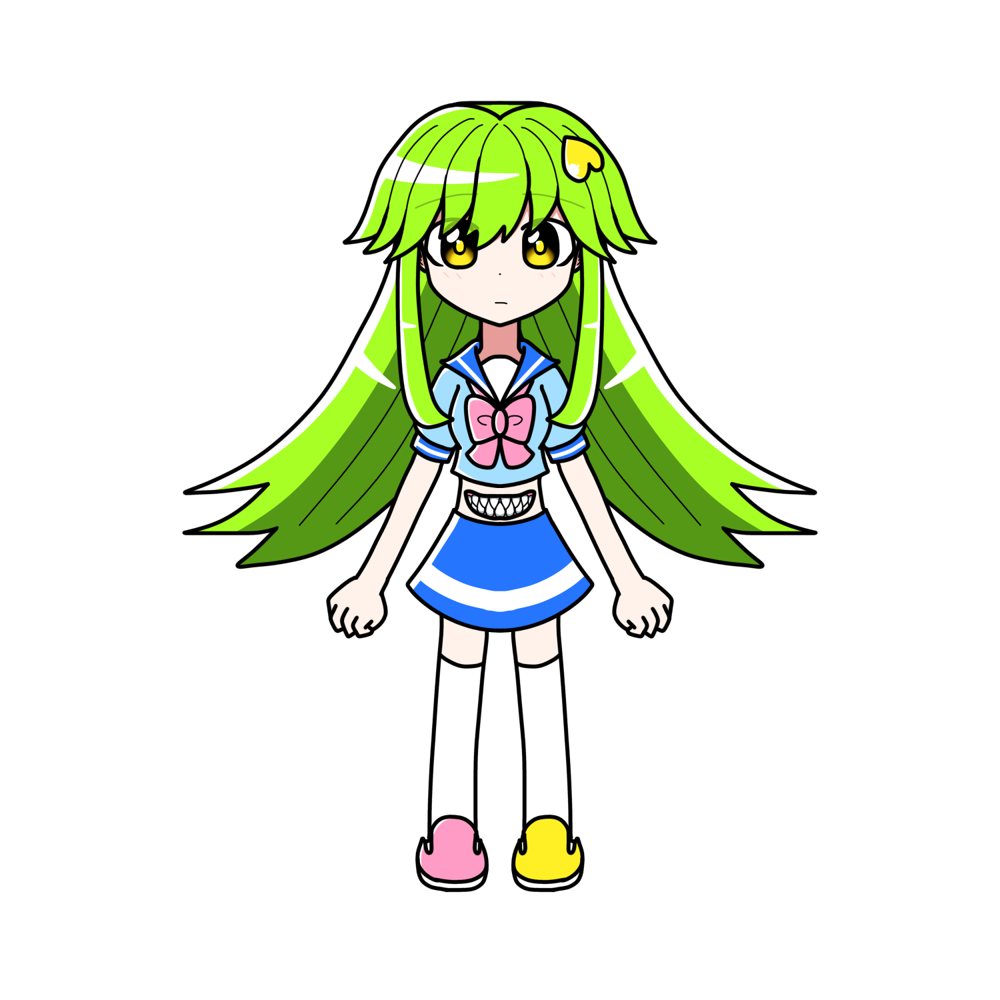

サロメ・シザーニ
概要
プロフィール
| 種族 | |
|---|---|
| 性別 | 女性 |
| 年齢 | 17歳 |
| 誕生日 | |
| 身長 | 154cm |
| 血液型 | |
| 出身 | カロトゥンシティ |
| イメージカラー | 緑・水色 |
| イメージCV | 秋奈 |
人物像
外見
顔とは別に腹に口が付いている。
基本上の口は喋る用、下の口は食べる用と
使い分けているが、別にどちらも喋れるし食べられる。
性格
非常に引っ込み思案。
過去の境遇から人嫌いになっている。
りんごが大好き。
口調
一人称は「わたし」
どこかたどたどしい話し方で
語尾に「～なの」と付く。
能力
経歴
活躍
人物関係
木川田ソフィア
ソフィア自身に悪意はないことは理解しているが、
サロメのことを奇異の目で向けていることから、
サロメはソフィアを苦手に思っている。